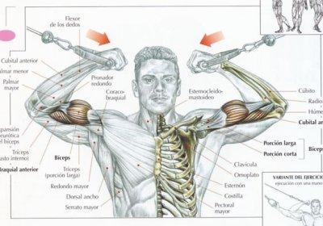

Welcome to Ejercicios efectivos de bíceps
Los Mejores Ejercicios de Bíceps - BarBend Spanish
2021.06.26 19:47Saltar al contenido Subscribe Menú Home
Los Mejores Ejercicios de Bíceps
Mike Dewar Updated on junio 12, 2020 Facebook Twitter Reddit Pinterest LinkedInEn este artículo discutiremos los mejores ejercicios para desarrollar bíceps más fuertes (y musculosos). ¿Crees que no necesitas entrenar tus bíceps? ¡Piensa otra vez!
En esta Guía de los Mejores Ejercicios de Bíceps, discutiremos:
¿Qué son los músculos bíceps? ¿Por qué es importante el entrenamiento de bíceps y quién puede beneficiarse? 8 Mejores Guías de Ejercicios de BícepsRelacionado: ¡No te olvides estos 10 mandamientos del entrenamiento de bíceps !
Músculos Bíceps
A continuación, se muestra un desglose de los músculos individuales que forman los bíceps, junto al propósito específico de cada uno.
Bíceps Braquial
Bíceps Braquial (en latín, “brachii”) significa “músculo del brazo de dos cabezas”. Los bíceps se unen a través de dos articulaciones (el codo y el hombro), lo que hace que cumplan algunas funciones diferentes. Primero, los bíceps pueden contraerse para crear tanto la flexión del codo como la del hombro. Además, el bíceps también es responsable de la supinación de la muñeca (palmas hacia arriba).
Imagen por decade3d – anatomía online/Shutterstock
El bíceps es clave no solo para aumentar el tamaño del brazo sino también para la fuerza de agarre y tracción, y la salud general de los tejidos conectivos que sostienen los codos en gimnasia, peso muerto, cargadas, etc.
Nota del autor: A continuación, se muestran algunos ejercicios de bíceps que también estresarán los antebrazos y la espalda, ya que también son los motores principales en algunos movimientos de tracción. La cantidad de activación y estrés varían de un ejercicio a otro.
Por Qué Entrenar los Bíceps
A continuación, se muestran algunas razones para entrenar bíceps, específicamente para ciertos tipos de atletas y poblaciones.
Atletas de Fuerza
Los atletas de fuerza pueden beneficiarse del entrenamiento de bíceps debido a su capacidad de ayudar a movimientos como peso muerto, acarreos y tirones. Los bíceps más fuertes permitirán generar mayores cantidades de fuerza a través del aumento de la fuerza de agarre y la fuerza de la parte superior del cuerpo.
Si bien el curl de bíceps puede no aumentar tu peso muerto directamente, ayudarán a reducir la tensión y el estrés sobre los tejidos conectivos del codo ( ya que el músculo trabajará para controlar los movimientos de tracción más pesados ).
Foto por ALL best fitness is HERE/Shutterstock
Halterófilos en General
Los bíceps, durante los movimientos de tracción como las cargas de peso muerto, las dominadas/chin ups, los remos, etc., frecuentemente pueden entrenarse adicionalmente para aumentar la forma y el tamaño del bíceps. Muchos halterófilos en general no necesitarán dedicar una gran cantidad de tiempo al trabajo específico de bíceps si un programa consiste en varios movimientos de tracción (como algunas de las variaciones de remo a continuación).
Población Cotidiana
Cuando se busca mejorar el estado físico y la salud, el entrenamiento de bíceps puede no estar precisamente en el top de la lista de tareas. Para la mayoría de los aficionados al ejercicio físico, el tiempo dedicado al curling se puede dedicar a mejorar el estado cardiovascular, controlar las dominadas, las sentadillas, los pesos muertos y otros levantamientos compuestos básicos (como el remo con agarre supino).
Dicho esto, agregar algunos curls de bíceps a un programa diario puede ser aceptable, y a menudo se justifica por el disfrute de los halterófilos cotidianos en el entrenamiento de los brazos.
Personas Mayores y/o Personas Vinculadas al Escritorio
Agregar cualquier cantidad de masa muscular a medida que uno envejece/está inactivo, es clave para la salud, el bienestar y la calidad de vida a largo plazo. Dicho esto, si alguien está en el gimnasio listo para trabajar, el curl de bíceps (que a su vez es un poderoso ejercicio de construcción de brazos), puede ser demasiado unidimensional para las personas que deberían moverse más, realizar levantamientos compuestos y comprender cómo mejorar su rendimiento general de salud y bienestar.
Al igual que el halterófilo de todos los días, los curls de bíceps pueden ser útiles para impulsar la moral de atacar objetivos estéticos, y pueden usarse como tales; siempre y cuando no tengan prioridad sobre un movimiento más compuesto y fundamental en el entrenamiento.
Mejores Ejercicios de Bíceps
A continuación, se presentan 8 (ocho) de los mejores ejercicios de bíceps para el desarrollo general, la fuerza y la estética.
1. Curl con Barra
El curl con barra es uno de los ejercicios de bíceps más icónicos hasta la fecha. Cuando se realiza correctamente, este ejercicio apunta al bíceps y puede agregar un serio tamaño y fuerza a todo el músculo, a menudo con mayores cantidades de carga de los otros ejercicios de bíceps.
3 Beneficios del Curl con Barra
A continuación, se presentan tres beneficios del curl con barra que entrenadores y atletas pueden esperar al agregar este clásico de entrenamiento con barra a sus programas de entrenamiento
1. Simple y Efectivo
Una vez que hayas dominado la técnica (que puedes hacerlo leyendo a continuación), puedes agregar carga o repeticiones y construir algunas tuberías serias con este ejercicio de brazo basado en barra. La capacidad de agregar mayores cantidades de carga a la barra hace que este ejercicio siga siendo uno de los ejercicios de bíceps más fundamentales.
2. Aumenta el Tamaño del Brazo
Si bien hay una gran cantidad de ejercicios de bíceps y métodos para elegir, el curl con barra se encuentra por encima de cada uno de ellos, principalmente porque permite que un halterófilo cargue peso en una barra y lo mueva. El estímulo general de sobrecargar un grupo muscular y al levantar, fracasar, no puede ser vencido. Dicho esto, muchos halterófilos pueden saltearlo y probar versiones más elegantes y llamativas de los ejercicios de bíceps. Asegúrate de dominar esto primero para construir masa, y trabaja en los movimientos más aislados después.
3. Fuerza General del Brazo Superior del Cuerpo
Un aspecto de la fuerza y el tamaño del entrenamiento es la carga, y el curl con barra permite precisamente eso. En pocas palabras, el curl con barra permite que un halterófilo use un poco más de peso que en otros ejercicios más aislados (como el curl de concentración), lo que ayuda a desarrollar el tamaño y la fuerza general, los componentes básicos de un gran programa de brazos.
Cómo Realizar el Curl con Barra
A continuación, se muestra una breve guía sobre cómo realizar el curl con barra.
Paso 1 : Agarra una barra con un agarre bajo la mano, ligeramente más ancho que los hombros. Paso 2 : Con el pecho hacia arriba y los omóplatos bien apretados, expone la parte delantera de tus bíceps tirando de los hombros hacia la cavidad. Los codos deben residir debajo de la articulación del hombro, o ligeramente delante de las costillas. Paso 3 : Enrolla la barra hacia arriba utilizando los bíceps, asegurándote de no dejar que el torso se incline hacia adelante, que los hombros se colapsen hacia adelante o que los codos se deslicen hacia el lado trasero del cuerpo (deben permanecer ligeramente delante de los hombros). ¡Echa un vistazo a nuestra Guía de Ejercicios de Curl con Barra y aprende a agregar tamaño y fuerza funcional a tus bíceps!2. Dominadas de Agarre Invertido
La dominada de agarre invertido (chin-ups) es un ejercicio de peso corporal que puede inducir un crecimiento muscular grave del bíceps (y la espalda). Sin embargo, a menudo, los halterófilos pueden realizarlos incorrectamente, utilizando muchos de los músculos anteriores del hombro y el agarre. Asegúrate de leer la sección de instrucciones para maximizar el rendimiento de la dominada, la fuerza y el desarrollo muscular.
3 Beneficios de la Dominada de Agarre Invertido
A continuación, se presentan tres beneficios de la dominada de agarre invertido que entrenadores y atletas pueden esperar al agregar este ejercicio de construcción de masa corporal a sus programas de entrenamiento.
1. Fuerza de Tracción del Cuerpo Superior
La dominada de agarre invertido puede usarse para aumentar la fuerza de la parte superior del cuerpo necesaria para el rendimiento general, el entrenamiento de dominadas y el tamaño en general.
2. No Se Necesita Equipamiento
Las dominadas de agarre invertido, las dominadas, las inmersiones, las flexiones, etc. no requieren ningún peso o equipo adicional, por lo que es un excelente ejercicio de peso corporal para incorporar en cualquier programa. A medida que uno avanza, pueden aumentar el volumen (repeticiones) de la dominada y/o eventualmente agregar carga externa (chaleco pesado, pesas, cadenas, etc.).
3. Mover el Propio Peso Corporal
Esta es una habilidad en la que muchos halterófilos recreativos son deficientes. La capacidad de mover el cuerpo con control y estabilidad es necesaria para una buena forma física funcional, la vida cotidiana y la prevención de lesiones. Asegúrate de dominar la dominada y otros movimientos de peso corporal, además de agregar carga en otro lugar.
Cómo Realizar la Dominada de Agarre Invertido
A continuación, se muestra una breve guía sobre cómo realizar las dominadas de agarre invertido.
Paso 1 : Cuelga de una barra con las muñecas en posición supina (las palmas hacia ti) y las manos separadas aproximadamente al ancho de los hombros, o ligeramente más anchas. Cuanto más anchas son las manos, más se involucra la espalda y menos el hombro anterior. Paso 2 : Desde un punto muerto, retrae y presiona la escápula para que la parte media de la espalda esté estable, asegurándote de mantener el pecho en alto y la cabeza acunada entre los brazos. Paso 3 : Con una posición central apretada y hueca, inclínate ligeramente hacia atrás y jala la barbilla hacia atrás, asegurándote de no dejar que el cuerpo se doble hacia adentro (muchas personas hacen esto). Obviamente, esto será más fácil que mantener la posición CORRECTA, pero también agregará tensión adicional en los hombros. ¡Echa un vistazo a nuestra Guía de Ejercicios de Dominada de Agarre Invertido y aprende a dominar este ejercicio fundamental de construcción de masa corporal!3. Curl en Predicador con Barra EZ
El curl con predicador con barra EZ es un curl de bíceps hecho con una barra de especialidad. Esta barra especial coloca la muñeca en un ángulo supino de 30-45 grados, ligeramente diferente a la barra recta estándar. Esto puede ayudar a estimular las diferentes fibras musculares del bíceps y ayudar a reducir la tensión en las muñecas de los halterófilos que pueden tener molestias con un curl de barra recta.
3 Beneficios del Curl en Predicador con Barra EZ
A continuación, se muestran tres beneficios del curl en predicador con barra EZ que entrenadores y atletas pueden esperar al agregar este ejercicio de aislamiento a sus programas de entrenamiento.
1. Estimular Nuevas Fibras Musculares
La curvatura de la barra EZ nos permite desafiar los bíceps en diferentes ángulos a comparación de la barra recta. Esto puede ser útil para estimular un crecimiento muscular nuevo y agregar variedad al entrenamiento del brazo.
2. Crecer el Pico
El curl con barra EZ hace un buen trabajo al aislar los bíceps y permite un mayor grado de flexión en la parte superior del movimiento, lo que favorece la contracción.
3. Agarre Apto Para las Articulaciones
Esta colocación de agarre semi-supino puede molestar menos las muñecas que la barra recta en los halterófilos que pueden sentir molestias al realizar el curl de bíceps con barra estándar/barra recta.
Cómo Realizar el Curl en Predicador con Barra EZ
A continuación, se muestra una breve guía sobre cómo realizar el crl en predicador con barra EZ.
Paso 1 : Coloque su cuerpo en la misma posición que el curl de bíceps con barra estándar (pecho hacia arriba, hombros hacia atrás y codos ligeramente hacia adelante). Paso 2 : Sujeta el mango de la barra EZ en las piezas anguladas internas. Esto colocará tus manos un poco más angostas que el ancho de los hombros y en un ángulo semi-supino. Paso 3 : Con el cuerpo bloqueado en su lugar, dobla la barra hacia arriba mientras flexionas los bíceps, deteniéndote brevemente en la parte superior para flexionar los bíceps. Baja bajo control y repite.4. Curl Martillo (Mancuerna)
El curl martillo es una variación del curl con mancuerna que coloca las muñecas en una posición neutral, por lo tanto, aísla el braquial y el braquiorradial (bíceps y antebrazo externos).
3 Beneficios del Curl Martillo
A continuación, se muestran tres beneficios del curl martillo que los entrenadores y los atletas pueden esperar al agregar estos ejercicios de construcción de bíceps y antebrazos a sus programas de entrenamiento.
1. Aumenta el Tamaño y la Fuerza del Brazo
El curl martillo, como muchos de los ejercicios en esta lista, puede aumentar significativamente el tamaño y la fuerza del brazo. Sin embargo, a diferencia de los otros movimientos, el curl martillo agrega tamaño y fuerza al aspecto externo de los bíceps y antebrazos.
2. Fuerza de Agarre Mejorada
El curl martillo puede aumentar la fuerza de agarre debido a su orientación de los músculos braquiorradial y los músculos del antebrazo/agarre (principalmente debido a la colocación neutral del agarre).
3. Estabilidad de la Muñeca
La posición variada (neutral) de la muñeca puede ayudar a fortalecerla en otras posiciones además de la supinación y la pronación, lo que hace que el curl martillo sea un buen ejercicio para reforzar la estabilidad de la muñeca y la fuerza del agarre mientras entrenas los brazos.
Cómo Realizar el Curl Martillo
A continuación, se muestra una breve guía sobre cómo realizar el curl martillo.
Paso 1 : Agarra un par de mancuernas con las manos a los lados y las palmas hacia el cuerpo. El pecho debe estar alto, los hombros deben estar hacia atrás y hacia abajo, y los codos por debajo de los hombros. Paso 2 : Levanta la mancuerna hacia arriba para que los pulgares salgan primero, asegurándote de no girar la muñeca en la posición supinada o pronada (mantén la muñeca neutral). Paso 3 : Los codos deben entrar en aproximadamente 100-130 grados de flexión, obligando a los bíceps a contraerse agresivamente en la parte superior. Luego, baja bajo control y repite. ¡Echa un vistazo a nuestra Guía de Ejercicios de Curl Hammer y aprende a ajustar los curls estándar para obtener una gran fuerza y tamaño de brazos!5. Curl Inclinado con Mancuernas
El curl inclinado con mancuernas es una variación del curl de bíceps que coloca al halterófilo en una posición donde no se le permite involucrar los hombros. Al colocar al halterófilo en un banco inclinado, el torso se inclina, exponiendo más bíceps y aumentando el rango general de movimiento.
3 Beneficio del Curl Inclinado con Mancuernas
A continuación, se presentan tres beneficios del curl inclinado con mancuernas que entrenadores y atletas pueden esperar al agregar este ejercicio de variación de curl con mancuernas a sus programas de entrenamiento.
1. Mayor Rango de Moción
Aumentar el rango de movimiento a través de un banco inclinado puede aumentar la tensión en los bíceps y entrenar el músculo a través de nuevos rangos; aumentando en última instancia el daño muscular y estimulando nuevas fibras musculares.
2. Mínimo Compromiso del Hombro
La configuración del banco inclinado obliga al halterófilo a mantener los hombros hacia atrás y hacia fuera del movimiento, colocando mayores cantidades de carga y tensión en los bíceps en vez de permitir que la articulación del hombro se colapse hacia adelante y, en última instancia, use el deltoides anterior para levantar la carga.
3. Poco Engaño Permitido
Esta posición deja poco al azar en términos de trampa, lo que significa que es una excelente forma de asegurarse que los halterófilos estén aislando los bíceps correctamente y no solo balanceando o usando los hombros para mover el peso.
Cómo Realizar el Curl Inclinado con Mancuernas
A continuación, se muestra una breve guía sobre cómo realizar el curl inclinado con mancuernas.
Paso 1 : Establece un banco inclinado a un ángulo entre 45-70 grados. Paso 2 : Toma un par de pesas y sostenlas a ambos lados, mientras tiras los hombros hacia atrás y sacas el pecho hacia arriba. Los omóplatos y la espalda deben estar bien apretados. Esto sujetará los hombros hacia atrás y los mantendrá fuera del movimiento. Paso 3 : Con los codos hacia el piso, tuerce las pesas hasta un poco más allá del paralelo (aproximadamente 100 grados de flexión del codo), pausa, contrae y luego baja lentamente la carga y repite.6. Remo Inclinado con Agarre Supino
While this is a rowing movement, one that often is used to target the back muscles, the supinated grip bent over row can be an effective pulling exercise to target the biceps as well. Si bien este es un movimiento de remo, que a menudo se usan para apuntar a los músculos de la espalda, el remo inclinado con agarre supino puede ser un ejercicio de tracción efectivo para apuntar también a los bíceps.
3 Beneficios del Remo Inclinado
A continuación, se muestran tres beneficios del curl en barra que entrenadores y atletas pueden esperar al agregar esta variación de remo con barra a sus programas de entrenamiento.
1. Brazos y Espalda Más Fuertes
Aumenta la fuerza y el tamaño de los bíceps y la espalda a la vez con este movimiento compuesto. Esto puede ser útil para aquellos que tienen un tiempo limitado en el gimnasio o buscan maximizar la eficiencia y la efectividad en un programa de entrenamiento.
2. Carga Máxima en Bíceps
El remo con agarre supino permitirá que un halterófilo use altas cantidades de carga (en relación a los curls con barra), lo que puede ayudar a estimular el crecimiento y la fuerza de los músculos del brazo.
3. Promueve la Fuerza General y la Masa
Este levantamiento compuesto puede promover el crecimiento y la fuerza general del brazo, además de aumentar la capacidad de tracción de la espalda y también las caderas. Este movimiento también se puede programar en un bloque de fuerza principal, lo que lo convierte en un ejercicio de brazo y espalda altamente efectivo.
Cómo Realizar el Remo Inclinado
A continuación, se muestra una breve guía sobre cómo realizar el remo inclinado:
Paso 1 : Agarra una barra con la mano por debajo (agarre supino), al ancho de los hombros. Paso 2 : Asume la posición correcta de remo inclinado, con la espalda plana y el pecho hacia arriba. Paso 3 : Rema la barra hacia el esternón/estómago, asegurándote de tirar con la espalda y los brazos, bajando la carga con control y repitiendo las series. ¡Echa un vistazo a nuestra Guía de Ejercicios de Remo Inclinado y aprende cómo (y por qué) este ejercicio es uno de los movimientos más potentes para la fuerza y la masa del brazo en general!7. Curl con Cable
El curl con cable puede usarse para integrar el entrenamiento con cable al ejercitamiento de bíceps. El uso de cables puede aumentar el tiempo bajo tensión, permitir que se desafíe la fuerza en todo el rango del movimiento y mejorar el crecimiento muscular y el compromiso a través de diferentes patrones/ángulos de carga.
3 Beneficios del Curl con Cable
A continuación, se muestran tres beneficios del curl con cable que entrenadores y atletas pueden esperar al agregar este ejercicio con cable a sus programas de entrenamiento.
1. Más Tiempo Bajo Tensión
Aumentar el tiempo bajo tensión a través del entrenamiento por cable, puede ayudar a aumentar la hipertrofia y las demandas musculares en los bíceps.
2. Ángulos Variados
La capacidad de cambiar el ángulo hace que sea muy fácil agregar variedad y entrenar el curl de bíceps (u otro ejercicio de bíceps) desde un ángulo ligeramente diferente. Al hacerlo, puedes mantener las fibras musculares adaptándose, y nunca permitir que se acostumbren completamente a un movimiento/ángulo.
3. Manipular Rangos de Movimiento
Los cables permiten a entrenadores y halterófilos manipular el rango de moción y ángulos en los que se realiza el movimiento, lo que puede ser útil para los halterófilos que pueden tener limitaciones con ciertos ejercicios “fijos” y/o buscan variar su entrenamiento de bíceps para estimular un nuevo crecimiento muscular.
Cómo Realizar el Curl con Cable
A continuación, se muestra una breve guía sobre cómo realizar el curl con cable.
Paso 1 : Coloca los cables a la altura deseada, a menudo desde una posición baja. Paso 2 : Agarra los mangos, la cuerda o el accesorio de la barra y realiza la variación de curl deseada.8. Curl de Concentración
El curl de concentración es un ejercicio de bíceps altamente aislado que a menudo se realiza al final de una sesión de entrenamiento, después de los ejercicios principales de bíceps.
3 Beneficios del Curl de Concentración (Mancuernas)
A continuación, se muestran tres beneficios del curl de concentración que entrenadores y atletas pueden esperar agregando este ejercicio de aislamiento unilateral de bíceps a sus programas de entrenamiento.
1. Reclutamiento Muscular
El curl de concentración puede ser un buen movimiento de aislamiento para ayudar a los halterófilos a reclutar más fibras musculares a través del aumento del tiempo bajo tensión (tempo más lento).
2. Conexión Mente-Músculo
El curl de concentración se trata de que el halterófilo se concentre en usar los bíceps para mover la carga, a menudo disminuyendo el control del tempo y flexionando al máximo durante todo el movimiento. Esto puede ayudar a más halterófilos distraídos a centrarse más en la tarea en cuestión.
3. Contracciones Máximas
A lo largo del curl de concentración, el halterófilo debe contraer al máximo los bíceps para reforzar una mayor contracción muscular voluntaria para estimular una mayor producción de fuerza, involucrar más fibras musculares y estimular el crecimiento muscular.
Cómo Realizar el Curl de Concentración
A continuación, se muestra una breve guía sobre cómo realizar el curl de concentración.
Paso 1 : Siéntate en un banco con los pies anchos para permitir que tu brazo cuelgue en el medio, con los codos/tríceps apoyados en el interior de la pierna/rodilla. Paso 2 : Con una mancuerna en la mano, lentamente torna la mancuerna hacia arriba a un ritmo controlado, concentrándote en contraer los bíceps para mover la carga. Paso 3 : En la punta del movimiento, flexiona lo más fuerte que puedas, luego baja lentamente la carga. La clave es no perder tensión en los bíceps, en ningún punto del rango del movimiento.¡Más Consejos sobre el Entrenamiento de Bíceps!
¿Estás buscando mejorar tu juego de bíceps y hacer crecer esos 22? ¡Mira estos otros artículos útiles de entrenamiento de bíceps para atletas de fuerza, de fitness y de potencia!
11 Ejercicios de Bíceps Para una Gran MASA ¡Por Qué DEBERÍAS hacer Curls! Published on junio 10, 2020Mike Dewar
Mike holds a Master's in Exercise Physiology and a Bachelor's in Exercise Science. He's a Certified Strength and Conditioning Specialist (CSCS) and is the Assistant Strength and Conditioning Coach at New York University. Mike is also the Founder of J2FIT , a strength and conditioning brand in New York City that offers personal training, online programs, and has an established USAW Olympic Weightlifting club.Deja un comentario Cancelar la respuesta
Latest News
Descubre los Pensamientos de Arnold Schwarzenegger Sobre el CrossFit
5 Ejercicios TRX® Para Construir la Parte Superior de la Espalda Sólida Como una Roca
Los Mejores Ejercicios Para la Espalda
Los Mejores Ejercicios de Bíceps
Featured Video
Follow Us
BarBend is an independent website. The views expressed on this site may come from individual contributors and do not necessarily reflect the view of BarBend or any other organization. BarBend is the Official Media Partner of USA Weightlifting. BarBend is not affiliated with or endorsed by CrossFit, Inc. or NPGL.
Contact us: [email protected]
BARBEND
About Us Advice Disclaimer Sitemap Privacy Policy Disclaimers & Disclosures Terms of Use Cookies Policy Editorial PolicyFOLLOW US
© Copyright BarBend Inc 2021